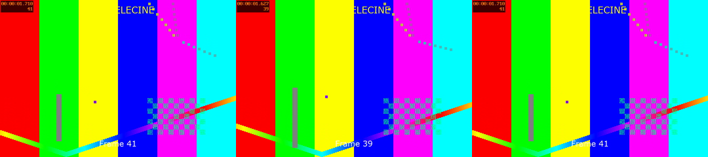
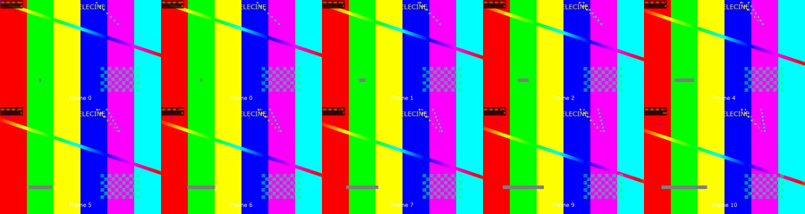
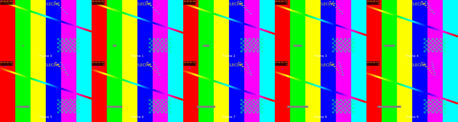

Issue #174 — leading repeat slots: frame N is a slot of the source's grid
rawvideo, and ffmpeg times that
output at a constant rate by its own rules. Those rules do not always put a stored frame where its
timestamp says, and a seek kept the stored frame after the point it was asked for. So on
sources whose stored frames are not one per frame number, the app's frame numbers, the preview, the
Original, trims and the untrimmed encode disagreed:
- Soft telecine stored at its film rate (
soft_telecine_test.mkv): the first frame's repeat flag made it three slots long, so every encoded frame was two frames late (122 slots for 120 frames), the tail was cut, and a trim starting on a flagged frame tripled it. - AVI null frames (
interlaced_test.avi, and a mid-stream dropped-frame run): slot 4 showed the wrong picture and a trim or preview from inside a null run started on the frame after it. - DVD soft telecine at 29.97: a seek onto a pulldown repeat showed the next film frame.
- The Soft Telecine method decimated whatever the rate: on a source the app sends as 23.976 it removed 24 of 120 real film frames and stamped 19.18 fps.
-copyts, setpts to the first picture, fps, trim=start_pts=N), and
a decoder that starts at N seeks 8 slots early. The Soft Telecine method decimates only at 29.97/30 fps.
Every check below is exact after the fix; regular sources are unchanged frame for frame.
1. What the app sends for soft telecine
Script: rate_probe.py. A DVD's MPEG-2 header always says 29.97; the film cadence is in
repeat_first_field flags. soft_telecine_dvd.vob/.mkv are built that way by
Tests/TestResources/generate_source_grid_test.sh. The older fixture has a 23.976 header with frame-repeat flags
(progressive_sequence 1), the shape of an ATSC-style film broadcast.
| Source | r_frame_rate | avg_frame_rate | App sends | repeat_pict, first 10 | Soft Telecine decimates |
|---|---|---|---|---|---|
soft_telecine_test.mkv | 24000/1001 | 24000/1001 | 23.976 | 4,0,4,0,0,4,0,4,0,0 | no (already film) |
soft_telecine_dvd.vob (MPEG-PS) | 60000/1001 | 30000/1001 | 29.970 | 1,0,1,0,… | yes |
soft_telecine_dvd.mkv (MakeMKV-like: one timestamp per film frame) | 30000/1001 | 30000/1001 | 29.970 | 1,0,1,0,… | yes |
So the method's premise (a 29.97 decode holding 3:2 repeats) holds for DVD-shaped sources in both
containers: selectFrameRate takes avg for the VOB's 2:1 rates, and Matroska reports the header's
rate even when its timestamps are at film spacing. It fails only when the source's own rate is the film rate.
Decision: decimate at 29.97 or 30 fps only (soft_telecine_decimates_at, app twin
VideoInfo.softTelecineDecimates, both reading soft_telecine_rates.json). At any other rate
the method passes frames through and says so; the app treats a 23.976 soft-telecine source as progressive film
(deinterlacing off, Deinterlace not suggested, content rate = the rate). PAL's 24→25 pulldown would need a cycle of
25 and is left alone, never decimated by 5.
2. Untrimmed decodes
Script: slot_probe.py. Pictures are named by the MD5 of their luma in an independent
-fps_mode passthrough decode (every stored frame once). The timeline is the
reference: each stored frame placed by its ffprobe timestamp, slot i showing the last frame whose
round((t − t₀) × rate) ≤ i.
| Source | Stored | Old slots | Grid slots | Old = timeline | Grid = timeline | Where old differs |
|---|---|---|---|---|---|---|
interlaced_test.avi (4 leading null frames) | 75 | 79 | 79 | no | yes | slot 4: stored 1 (timestamp says 0) |
null_frames_mid.avi (frames 100–104 null) | 195 | 200 | 200 | no | yes | slot 104: stored 100 (says 99) |
soft_telecine_test.mkv | 120 | 122 | 120 | no | yes | 0,0,0,1,2…: every slot from 1 on, two late |
soft_telecine_dvd.vob | 120 | 150 | 149 | no | yes | a trailing extra slot |
soft_telecine_dvd.mkv | 120 | 150 | 150 | no | yes | the repeat one slot early in 1 cycle of 4 (slots 2, 7, 32, 37…) |
pal-dvbt-fieldcoded-25i.ts | 126 | 128 | 128 | no | yes | slots 124, 126 (the tail #169 noted) |
| small_clip.mp4, seek_timebase_2997.mov, colorize_test.mp4, face_restore_test.mp4, late_video.mkv/.mp4, late_video_intra.ts, prores422_10bit_telecine.mov | identical, old = grid = timeline, every slot | |||||
hard_telecine_test.avi (MPEG-2 in AVI, packets without PTS) | 90 | 90 | no grid: decoded exactly as before (#173's rules) | |||
Why ffmpeg's own output disagreed: its constant-rate logic emits a frame as many times as its
duration covers, and a repeat_pict flag lengthens the duration while the next timestamp
does not move (the first frame of soft_telecine_test.mkv is three slots, and the backlog never
clears); at a gap's edge it rounds differently from the timestamps. The fps filter places
frames by timestamp alone.
3. Decoders that start at frame N
Script: seek_probe.py. Ten frames from each start, against the untrimmed grid decode's
slots N…N+9. old: the decoder before this fix; B: the same seek with the grid added but
still resetting to the first kept frame; grid: the fix. (TS/PS sources are left out here: their
old seek also lands on the next keyframe, #169's fault; the heavy test covers the VOB.)
| Source | Starts | old | B | grid | Example |
|---|---|---|---|---|---|
interlaced_test.avi | 11 | 7 | 7 | 11 | start 3: want 0,0,1,2,3 · old 1,2,3,4,5 |
null_frames_mid.avi | 17 | 13 | 14 | 17 | start 102: want 99,99,99,100,101 · old 100,101,102… |
soft_telecine_test.mkv | 17 | 0 | 17 | 17 | start 1: old 1,2,2,2,3 (a flagged frame tripled) |
soft_telecine_dvd.mkv | 17 | 0 | 2 | 17 | start 3: want 2,3,4,5,6 · old 2,3,3,4,5 |
| small_clip.mp4, seek_timebase_2997.mov, colorize, face_restore, late_video.mkv/.mp4, prores telecine | 7–17 | all exact, all three | |||
B shows why the grid alone is not enough: setpts=PTS-STARTPTS (#157) makes the first frame the
seek kept slot 0, and inside a null run or on a pulldown repeat that is the stored frame after the slot.
The fix keeps the file's timestamps (-copyts), subtracts the same constant in every decoder (the first
picture's PTS, so the fps filter's rounding is identical everywhere, pulldown half-slot ties included),
and drops to slot N by its own timestamp. The 8-slot lookback covers a gap of up to 8 slots exactly; inside a longer
null run the slot shows the first frame the seek kept (as before).
Cost: an 11-frame preview decode at frame 1000 of small_clip.mp4 took 35 ms against 32 ms (mean of 5).
4. The worker, before and after
Script: worker_probe.py, every pass off, lossless FFV1, each at the frame count that version of the
app sends. “Exact” means every output frame is the timeline's slot.
| Source | App count before → after | Untrimmed before | after | Trims wrong before | after |
|---|---|---|---|---|---|
interlaced_test.avi | 79 → 79 | 1 slot wrong | exact | from 1, 3, 4: start 1,2,3… | none (1, 3, 4, 5, 40) |
null_frames_mid.avi | 200 → 200 | 1 slot wrong | exact | from 98, 100, 102 | none |
soft_telecine_test.mkv | 121 → 120 | 120 slots wrong | exact | all (1, 10, 41) | none |
soft_telecine_dvd.vob | 149 → 149 | 1 slot wrong | exact | from 3, 43 | none |
soft_telecine_dvd.mkv | 150 → 150 | 9 slots wrong | exact | from 3, 10, 43 | none |
seek_timebase_2997.mov, late_video.mkv | unchanged | exact before and after | |||
small_clip.mp4 | 3154 → 3154 | exact but for the last 3 frames, before and after: nb_frames counts 3 frames an MP4 edit list drops, and the pipe repeats the last frame into them. Not changed here. | |||

soft_telecine_test.mkv, each picture's own counter: the source's stored frame 41 (left), the untrimmed
encode's frame 41 before the fix (middle: “Frame 39”) and after (right: “Frame 41”).5. The Soft Telecine method
| Source (rate sent) | Before: out, rate, film frames missing | After |
|---|---|---|
soft_telecine_test.mkv (23.976) | 97 at 19200/1001; 24 missing (3, 8, 14, 21…) | 120 at 24000/1001; none missing, no repeats |
soft_telecine_dvd.vob (29.97) | 120; frame 119 missing, 1 repeat left | 120 at 24000/1001; none missing, no repeats |
soft_telecine_dvd.mkv (29.97) | 120; none missing | 120; none missing |
The VOB's case is a partial cycle: 149 slots leave a last cycle of 4, and VDecimate removes one frame from
every cycle, so from that one it can only take a real frame. The encode script now presents a whole number of
cycles (ProcessingPipeline::pipe_frames, rounding up to a multiple of 5); pipe_source
repeats the last frame into the extra slots and VDecimate removes those instead.

soft_telecine_test.mkv, before:
Frame 0, 0, 1, 2, 4, 5, 6, 7, 9, 10. Frames 3 and 8 are gone (and 0 is twice).
6. The app's side
- The Original and the thumbnails start on the same grid (
SourceGrid.startAt, twin ofsource_decode::decode_start;source_grid_vectors.jsonpins the two). Probed with the same 64-packet ffprobe call as the video start, now also asking for the rates. - Frame count: a Matroska source with neither
nb_framesnor a stream duration is counted from its last picture's slot + 1 (one more ffprobe, of the last 3 s). The container duration counted the last frames' repeat flags (121 for 120). - No grid for a source whose probed packets lack PTS (MPEG-2, MPEG-4 ASP and H.264 in AVI): its picture times are decode-order guesses; #173's decoder delay handles those, unchanged.
7. Tests
app/test/integration_source_grid_test.dart(heavy): 5 fixtures × (app count = slot count, untrimmed encode = every slot, and per start: preview, Original and a 12-frame trim against the timestamp reference), plus the Soft Telecine method at 23.976 and 29.97. 25 cases. The same checks fail on the “before” worker (§4,worker_probe.py); the heavy file itself was run against the fixed worker only.integration_frame_mapping_test.dart's “from an in-point” is back at in-point 3, insideinterlaced_test.avi's null run (#157 had moved it to 6).- Re-run and passing: seek alignment, frame mapping, video start offset, reserved colour tags, VFR, clean aperture, crop detect, noise/halo (118 heavy cases with the new file).
- Unit: Rust
source_decode(grid probe cases, decode start, shared vectors, no-grid = #157/#169/#173's arguments),processing_pipeline(rate table, whole cycles),test_240; Dartsource_grid_test.dart,pass_relevance_test.dart.
8. Limits and what wasn't tested
- A null run longer than 8 slots: a start inside it shows the first frame after the run, as before.
- Untrimmed decodes of regular sources gain
-copytsand the grid filters in their arguments; their output was identical on every fixture measured (§2) but the argument lists are not byte-identical as before. - Windows and Linux were not run; the behaviour is the ffmpeg CLI's and every platform runs FFmpeg 9.0. The heavy test runs nightly on all four.
- PAL soft pulldown (24→25) is not decimated; real ATSC/H.264 soft-telecine captures were not available, only the 23.976-header fixture.
- The VFR path (
source_timing) is unchanged and already placed frames by timestamp. - MD5 identity says which stored picture came out, exactly, and nothing about colour.
9. Reproduce
cd worker && cargo build # the "after" worker Tests/TestResources/generate_source_grid_test.sh Tests/TestResources deps/<platform>/ffmpeg/ffmpeg BEFORE_WORKER=/path/to/before/vapourbox-worker docs/reports/issue-174-source-grid/scripts/run.sh
scripts/: gridlib.py (shared helpers), rate_probe.py (§1), slot_probe.py (§2),
seek_probe.py (§3), worker_probe.py (§4, §5), images.py (images 1–3), run.sh.